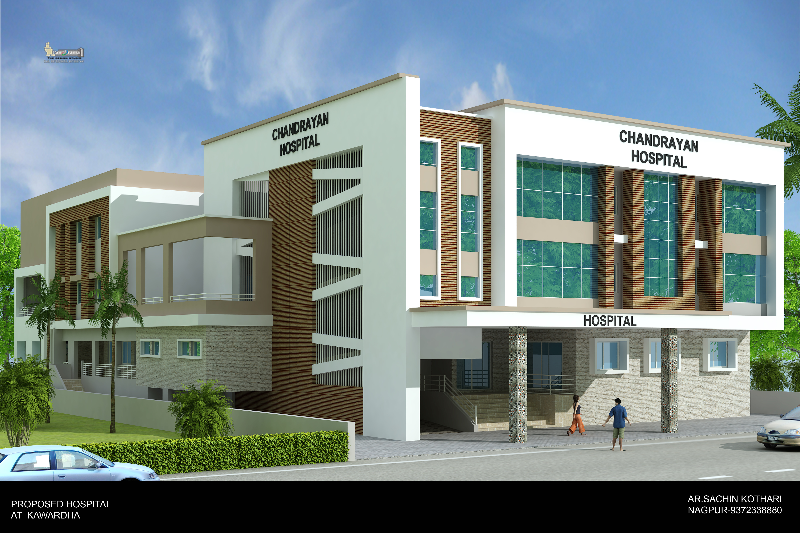

Architecture Rooted in Landscape & Human Experience.
For over 25 years, K2 Architects has unified structural precision with landscape ecology—crafting visionary educational campuses, multi-specialty healthcare institutions, high-density residential towers, and civic landmarks across 7 Indian states.

Delhi Public School Campus
 Delhi Public School
Delhi Public School
 Jindal School
Jindal School
 Vidyanchal
Vidyanchal
 Sanskar School
Sanskar School
 Yugantar School
Yugantar School
 Happy Faces
Happy Faces
 Polytechnic Institute
Delhi Public School
Jindal School
Vidyanchal
Sanskar School
Yugantar School
Happy Faces
Polytechnic Institute
Polytechnic Institute
Delhi Public School
Jindal School
Vidyanchal
Sanskar School
Yugantar School
Happy Faces
Polytechnic Institute
Where Built Form Meets Living Landscape.
Architecture is not an isolated object imposed upon the earth; it is an organic extension of its topography, sunlight, climate, and community.
Led by Principal Architect Ar. Sachin Kothari and Landscape Architect Ar. Riya Kothari, our studio harmonizes high-capacity institutional master planning with passive climatic comfort, bio-swales, green courtyards, and native regional materials. Every structure is engineered to endure and inspire.
Climate Responsive
Harnessing natural ventilation, daylight orientation, and solar shading.
Ecosystem Harmony
Integrating native flora, water management, and therapeutic campus greens.
Seven Disciplines of Specialized Practice
From expansive university master plans to multi-specialty trauma centers and bespoke private residences, our multi-disciplinary studio delivers end-to-end consultancy.
 01 / CAMPUSES
01 / CAMPUSES
Educational & Institutional
University master plans, CBSE/ICSE schools, polytechnic colleges, and academic clusters with optimized pedestrian spines and green spaces.

02 / HEALTHCAREHealthcare & Medi-Complex
NABH-compliant multi-specialty hospitals, medical colleges, clinical trauma centers, and diagnostic complexes engineered for medical flow.
Townships & Commercial Towers
High-density mixed-use complexes, retail hubs, commercial plazas, and master-planned residential townships across Central India.
 04 / RESIDENCES
04 / RESIDENCES
Luxury Bungalows & Farmhouses
Bespoke private villas, serene country farmhouses, and contemporary family estates celebrating indoor-outdoor living, light, and natural textures.
 05 / HOSPITALITY
05 / HOSPITALITY
Banquets, Hotels & Public Spaces
Grand celebratory banquet complexes, hotels, cultural auditoriums, and community gathering venues engineered for massive celebratory gatherings.
Featured Architectural Landmarks
Curated projects showcasing institutional mastery, urban scale, and structural elegance.
School Campus
Delhi Public School
 Healthcare
Healthcare
Medishine Multispeciality Hospital
 Township
Township
Jangir Integrated Township
The Minds Behind K2 Architects
A synergistic leadership pairing twenty-five years of structural mastery with innovative landscape ecology.

With a career spanning over a quarter-century, Ar. Sachin Kothari has directed the master planning and structural realization of over 450 major institutional, healthcare, and urban developments across India. His philosophy combines structural economy, bold geometric clarity, and operational functionality.

Specializing in environmental design, Ar. Riya Kothari spearheads the firm's biophilic and landscape ecology initiatives. Her work transforms institutional campuses, townships, and private estates into self-sustaining ecosystems featuring water retention, native micro-forests, and therapeutic outdoor realms.